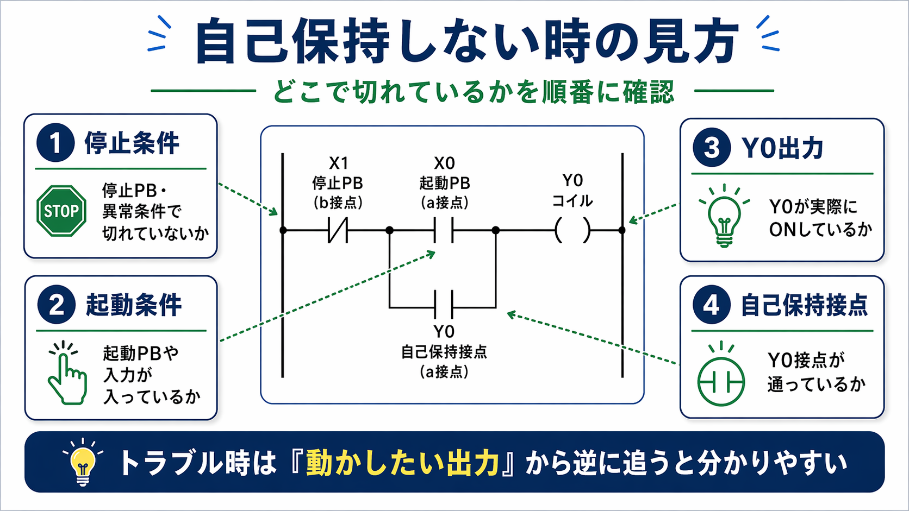

自己保持回路とは「一度つながった出力を自分でつなぎ続ける回路」です
自己保持回路は、起動ボタンを押した瞬間だけではなく、起動ボタンを離したあとも運転を続けたい時に使う基本回路です。
例えば、モータを回す、ポンプを動かす、設備の運転を開始するといった場面では、 ボタンをずっと押しっぱなしにしなくても動き続けてほしいことが多いです。 そのために使うのが自己保持です。
起動のきっかけがある
最初は起動PBや入力信号がきっかけになって回路が通ります。
出力がONする
条件がそろうとY0などの出力コイルがONします。
自分の接点で保持する
Y0が入ると、Y0の自己保持接点も通るようになり、運転を続けます。
停止条件で切れる
停止PBや異常条件で流れが切れると、自己保持も解除されます。
基本回路は「停止 → 起動 → 出力 → 自己保持」の流れで見ると追いやすいです
自己保持回路を読む時は、部品をバラバラに覚えるより、まずどこでつながり、どこで保持しているかを見ると追いやすいです。
下の図では、停止PB、起動PB、Y0コイル、Y0自己保持接点の関係をまとめています。 まずはこの形を一つ覚えておくと、他のラダーを見た時もかなり読みやすくなります。

基本回路の見方
- X1 停止PB（b接点）：通常は通っています。押されたり異常条件が入ると切れる側です。
- X0 起動PB（a接点）：押した時だけ通ります。最初のきっかけです。
- Y0 コイル：条件がそろうとONする出力です。
- Y0 自己保持接点（a接点）：Y0がONするとこの接点も通り、起動PBを離しても保持します。
動作の流れを順番で見ると自己保持の意味が分かりやすいです
1. 停止条件がOKの状態
まず、停止PBや異常条件側が問題なく通っている状態です。 ここが切れていると、その先へ進めません。
2. 起動PBを押す
起動PBを押すと、起動のきっかけが入ります。 ここで回路が通り、Y0コイルまで流れがつながります。
3. Y0がONする
Y0コイルがONすると、出力が入ります。 この段階で設備が運転を始めるイメージです。
4. Y0自己保持接点も通る
Y0がONすると、Y0自己保持接点も通るようになります。 これで起動PBを離しても、Y0接点側から回路が保持されます。
5. 停止PBや異常条件で切れる
停止PBが押されたり、異常条件が入ったりすると、回路のどこかが切れます。 そうするとY0がOFFになり、自己保持接点も通らなくなって止まります。
よくあるつまずきは「どこで保持しているか」が見えていない時です
自己保持回路は基本回路ですが、最初はつまずきやすい所もあります。 特に「起動PBを離したらなぜ止まらないのか」「どこが自己保持接点なのか」が分かりにくいことが多いです。
並列で入っているY0接点が自己保持接点です。ここが保持の役目です。
自己保持接点が通っていないと、起動PBを離した時点で回路が切れてしまいます。
停止PBや異常条件側が切れていると、そもそも保持以前に回路が通りません。
押しボタン、ランプ、リレー、接触器など実際の機器と合わせて見ると分かりやすいです。
自己保持しない時は「どこで切れているか」を順番に確認すると追いやすいです
現場で多いのは「自己保持回路を組む」よりも、「自己保持しない」「押している間しか動かない」といった確認です。 そういう時は、いきなり全部を読もうとせず、どこで切れているかを順番に確認すると見やすいです。

確認の順番
- 停止条件を見る
停止PBや異常条件で切れていないか確認します。 - 起動条件を見る
起動PBや入力信号がちゃんと入っているか見ます。 - Y0出力を見る
Y0が実際にONしているか、モニタや出力状態で確認します。 - 自己保持接点を見る
Y0接点が通っているか、保持の役目を果たしているか見ます。
さらに言うと、トラブル時は動かしたい出力から逆に追うと見やすいです。 モータを回したいなら、そのモータに関係する出力から見て、そこへ来るまでの条件を逆に追っていく方が現場では早いことが多いです。
最初はこの4つを押さえるとかなり追いやすくなります
- 起動PBは最初のきっかけ
- Y0が入ると、Y0自己保持接点も通る
- 起動PBを離しても、Y0接点で保持する
- 停止PBや異常条件でその流れが切れる
これだけでも、自己保持回路の見方はかなり楽になります。 細かい命令や応用回路より先に、この基本形をしっかり見られるようになると後が楽です。
自己保持回路でよくある疑問
A. 必ずではありません。押している間だけ動けばよい回路なら不要なこともあります。ただ、運転開始後も継続して動かしたい場合はよく使います。
A. 同じではありません。自己保持は「動き続けるため」の回路、インターロックは「同時動作を防ぐため」の回路として考えると分かりやすいです。
A. 停止条件、起動条件、Y0出力、Y0自己保持接点の順に見ると整理しやすいです。特にY0が本当にONしているかは早めに確認したいです。
次に読むとつながりやすい記事
自己保持回路の基本が見えてきたら、次はラダー全体の見方や、インターロック、PLCの役割へ広げると理解しやすいです。